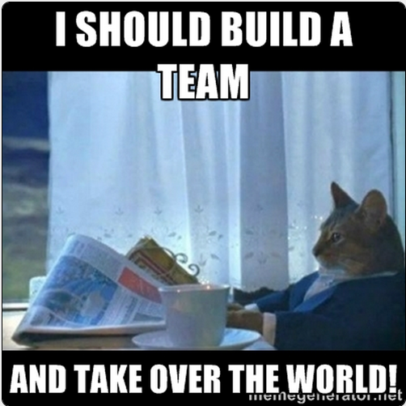

Week 3 Technical Reflections- Who'd Have Thunk?
Not me. I have always put myself forth as a thinker who ponders thoughtfully every question asked and responds in a logical and clearly de-lineated manner.Nope!
After delving into my Gregorc Learning style, taking multiple tests, finally taking an honest inventory of myself, I am not much of a Concrete Sequential learner. Not really.
 My test scores put me right in the middle of Concrete Random and Abstract Random, and the shoe fits. I am a teacher, a dreamer, a tester, a trier, a peacemaker, a consensus builder, a teammate, a risk-taker, and a little bit psychic.
As much time as I've spent in my office trying to get through the Phase 0 material, I have learned and retained the most when I was sitting outside on the back deck (the wi-fi wasn't great) and sitting in the kitchen studying and cooking at the same time. What's that about?
 I think its about the fact that I learn best when my brain is fully engaged. Sitting in my office is OK, but it is better when music is playing. Working on the projects on my own is fine sometimes, but it is better when I can talk it out with someone.
I think its about the fact that I learn best when my brain is fully engaged. Sitting in my office is OK, but it is better when music is playing. Working on the projects on my own is fine sometimes, but it is better when I can talk it out with someone. That being said, maybe Phase 0 is more of a challenge for me because I don't enjoy sitting in one spot and working on the objectives silently. My mind wanders to other things, and somehow I end up on Amazon.com or watching the World Cup before I even know what happened.
I need to get out and take Phase 0 on the road. There are free wi-fi places all over, and being amongst people moving around while I listen to music and figure out this JavaScript will probably help me learn faster and retain more of what I learn
ß
- July 2014
- Posted in Blog
- Continue Reading »